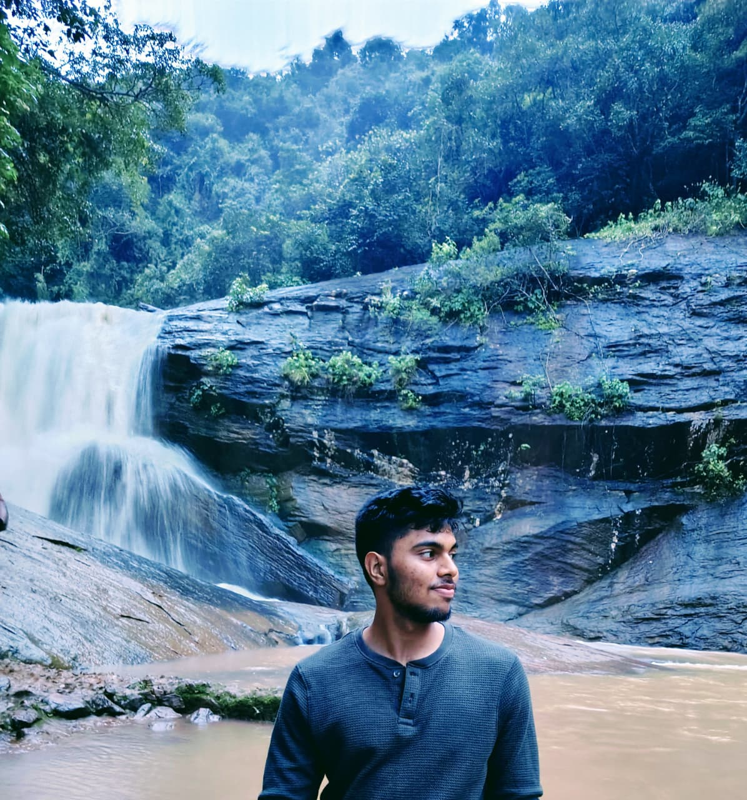

Swaroop Tripathy
Creative Developer & Tech Enthusiast
My Works
About Me
Overview
Persuing B.Tech in Computer Science and Engineering, student at KIIT University (2023–2027) with a strong foundation in programming and problem-solving. Skilled in Machine Learning, and Data science and analytics. I aim to apply my skills to drive innovation and enhance organisational growth and always eager to learn.
Hobbies
I am athletic, passionately try to stay fit and maintain good physique. Originally I love researching and studying physics, maths and astronomical sciences. I can play tabla and I like to watch anime.
Speciality
I seek to learn from everything, observe and make my perceptions.
Education
- 2021 - 2023 High School: Kendriya Vidyalaya Cuttack (Percentage: 85.5%)
- 2023 - 2027 B.Tech: KIIT University (CSE)
Profile

Name: Swaroop Tripathy
Focus: Data Science, Machine Learning, Quantum Computing
Location: Digital World